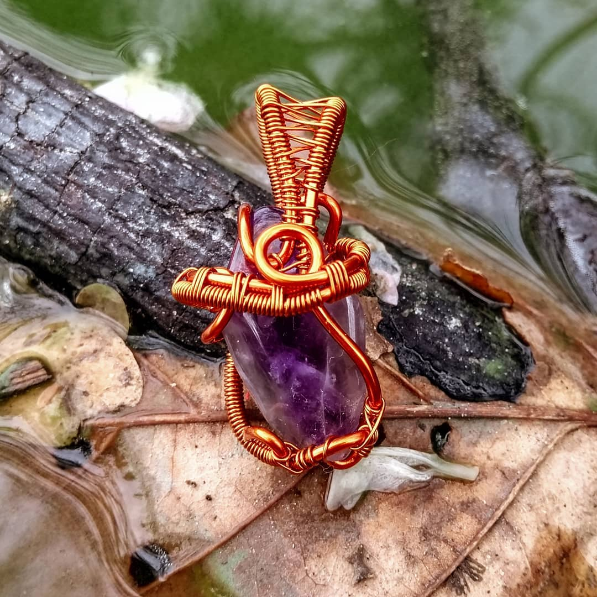
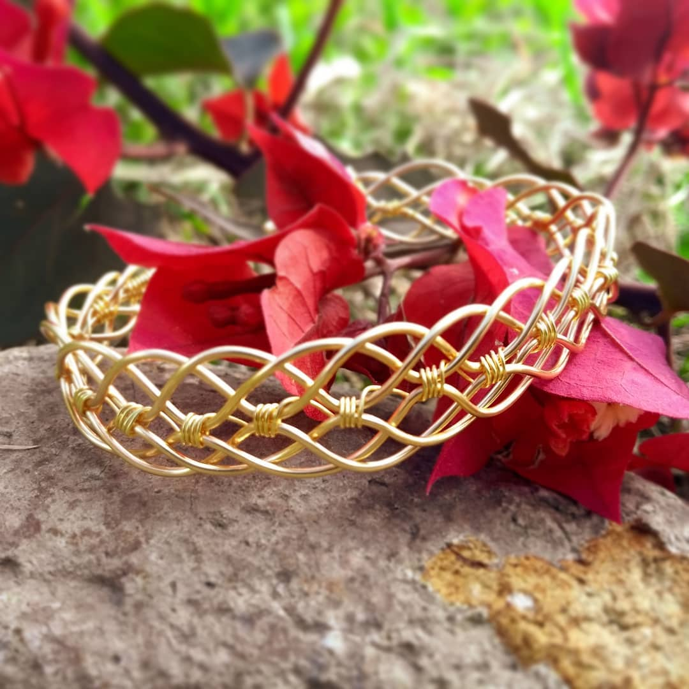

Envios
Envios gratuitos a cualquier país disponible.
Articulos Únicos
Joyas únicas, irrepetibles y personalizables.
Beneficios Munay
Obsequios exclusivos y descuentos especiales.
Algunas Joyas
Todos los artículos son trabajos manuales y transmiten diferentes energías munay.
Amatista Tormenta
Camino Dorado
Ojo del Bosque

ANDERSON
Anderson es un joven artesano que emprende diferentes obras en el ámbito artistico, es conocido localmente por dirigir eventos culturales y por su trabajo MUNAY en piezas artesanales.
¿Qué es el mañana?
Qué es el mañana, si no la mera especulación, la creencia del derecho a estar vivo; sólo queda el ahora eternos viajeros, no habrá grito para mañana, ni camino, ni labios rojos, ni flor en apertura, por eso, siente su aroma, besa sus pétalos, sonríe, extrae el néctar de la vida, tal vez... sólo tal vez, el mañana no exista.
¿Y si soy yo mismo?
El arte de ser uno mismo, es buscar nuestra propia verdad, no la de la sociedad, no la de nuestros padres, nuestra propia verdad, un camino pa'dentro pa'entender la inmensidad de afuera, como es arriba es abajo (y viceversa).
Pero, ¿Quién soy?
No soy mis malos pensamientos, ni mi tristeza, ni mis preocupaciones, soy el ahora agradeciendo, soy el ahora observando, amando, entregando. No soy mi pasado de culpas, de posibilidades perdidas, de desamores violentos, me niego a ser un pasado de dolor, soy el ahora aprendiendo, entendiendo el dolor, agradeciendo el dolor. Soy el ahora afirmando que nada es bueno ni malo, soy el ahora afirmando que todo ES.